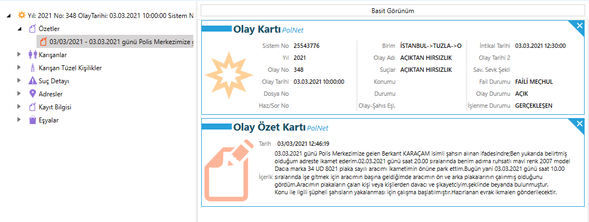
OLAY, GÖRÜNTÜ İZLEME, ARAŞTIRMA, DEĞERLENDİRME VE
TESPİT TUTANAĞI
05.03.2021 günü saat:07:43 de idaremiz dahilinde meydana gelen 2021-776 suç numaralı Faili Meçhul İŞYERİNDEN VE KURUMDAN HIRSIZLIK-MALA ZARAR VERME olayı ile ilgili olarak Müşteki Sinan ÇELİK alınan ifadesinde; “Ben halen belirtmiş olduğum adreste ikamet ederim. Aynı zamanda da Kurtköy Mahallesi Soydaş Sokak No:2BD sayılı adreste bulunan LS İnşaat isimli aile şirketimizde müdür olarak çalışırım. Dün yani 04/03/2021 günü saat:18:00 sıralarında işyerimizin kapılarını kilitleyerek ayrıldık. Bugün saat:09:00 sıralarında tekrar işyerimize geldiğimizde giriş kapısının kilit kısmının kırık ve kapının açık olduğunu gördüm. Hemen içeriye girip kontrol ettiğimde ifademe ek olarak sunmuş olduğum listede belirtilen çeşitli çap ve özellikte toplamda 1200 metre elektrik kablolarının, elektrik sobasının, ıphone şarj aletimin çalınmış olduğunu tespit ettim. Güvenlik kamera görüntülerini izlediğimde işyemin önüne 05/03/2021 günü saat:07:43 sıralarında 34 UD 8021 plaka sayılı beyaz renkli kapalı kasa doblo tarzı bir aracın yaklaştığını, araçtan üç kişinin indiğini, şahıslardan bir tanesinin kayıpı zorlayarak ve kilidini kırarak açtığını, daha sonrada üç kişinin içeriye giredek kabloları bu araca yükleyip gittiklerini tespit ettim. Bu görüntüleri size sunuyorum.
Daha sonra ben polise haber verdim. Polisler geldiler ve gerekli incelemelerini yaptılar. Daha sonra da ben polis merkezinize müracaat etmek için geldim. İşyerimizin kapı kilidini kırarak içeriye giren, içeride bulunan elektrik kablolarını çalan bu şahıslardan şikayetçiyim. Benim bu olayda maddi zararım 58.735 TL dir. Konu ile ilgili olarak söyleyeceklerim bunlardan ibarettir” şeklinde beyanda bulunması üzerine tahkikata başlanılmıştır.
Olay yerinde Olay Yeri İnceleme ekipleri tarafından yapılan teknik incelemede, mukayeseye elverişli iz ve bulguya rastlanılmadığı, Olaya ilişkin kamera görüntülerinin izlenilerek tanzim edilen tutanağın evraka eklendiği, konuyla ilgili idaremiz dahilinde yapılan araştırmada olayı gerçekleştiren şahsın kimlik tespiti ve yakalanması mümkün olmadığı, olayda kullanılan 34 UD 8021 sayılı plakanın (olay tarihinden önce) 03.03.2021 günü çalındığı, konu ile ilgili Tuzla Orhanlı Polis Merkezinde 2021/348 suç numaralı AÇIKTAN HIRSIZLIK konusu ile işlem yapıldığı anlaşılmış, düzenlenen tahkikat evrakının İstanbul Anadolu Cumhuriyet Başsavcılığına ikmalen gönderildiği anlaşılmıştır.
Pendik Yenişehir Polis Merkezi Amirliğimiz sorumluluk alanında geçmiş tarihlerde meydana gelen Faili Meçhul olayların aydınlatılabilmesi/Faillerinin tespiti ve yakalanması amacıyla, Suç Araştırma ve Soruşturma Büro Amirliği görevlileri olarak yapmış olduğumuz çalışmalarda; yukarıda belirtilen olayla alakalı işyerinden hırsızlık olayına karışan beyaz renkli Ford Courrier marka aracın üzerine takılı olan 34 UD 8021 sayılı plakaların; İSTANBUL-
>TUZLA->ORHANLI POLİS MERKEZİ AMİRLİĞİ nin 03/03/2021 tarih ve 2021/348 ceraim numaralı AÇIKTAN HIRSIZLIK olayı ile ilgili ÇALINDIĞI anlaşılmış, müşteki Berkant KARAÇAM
ın alınan beyanında “02.03.2021 günü saat 20.00 sıralarında benim adıma ruhsatlı mavi renk 2007
model Dacıa marka 34 UD 8021 plaka sayılı aracımı ikametimin önüne park ettim. Bugün yani 03.03.2021 günü saat 10.00 sıralarında işe gitmek için aracımın başına geldiğimde aracımın ön ve arka plakalarının çalınmış olduğunu gördüm. Aracımın plakaların çalan kişi veya kişilerden davacı ve şikayetciyim.” şeklinde beyanda bulunduğu görülmüştür.
Sayfa 1 / 16

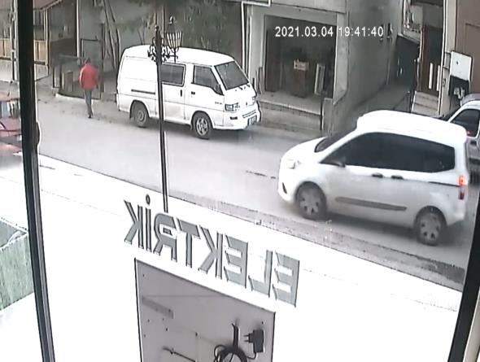
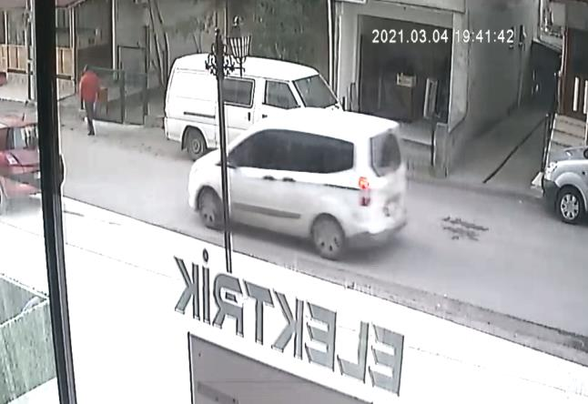
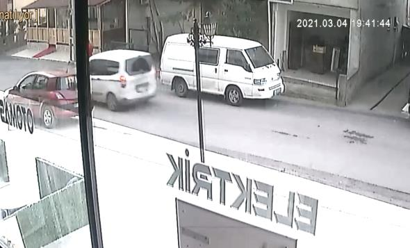
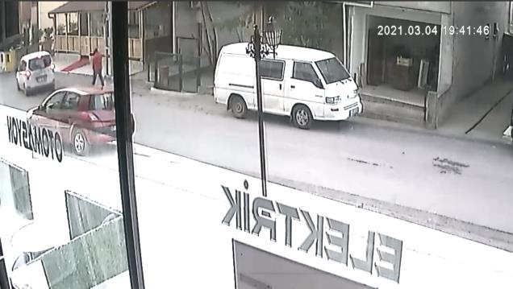
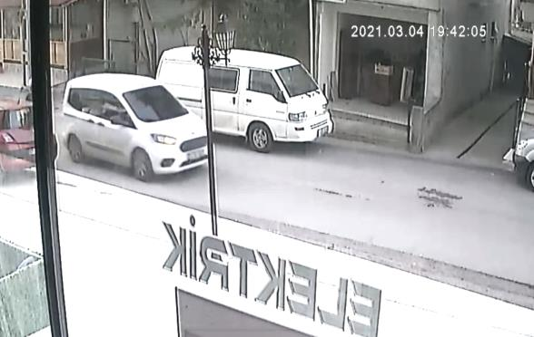
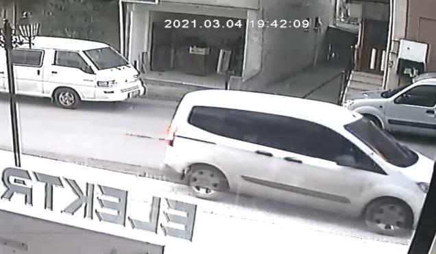
Pendik Yenişehir Polis Merkezi Amirliğimiz idaresi Kurtköy Mahallesi Soydaş Sokak No:2BD
sayılı adreste bulunan LS İnşaat isimli işyerinde 05.03.2021 günü saat:07:43 de meydana gelen 2021-776 suç numaralı Faili Meçhul İŞYERİNDEN VE KURUMDAN HIRSIZLIK-MALA ZARAR
VERME olayı ile ilgili olarak temin edilen görüntüler aşağıya çıkartılmıştır.
(Kamera tarih ve saatinin muhtemelen 24 saat ile geride olduğu)
1_01_H_210304194000 isimli video dosyası açılıp bilirkişi olmaksızın Polis Merkezimizde mevcut bilgisayarda uygun oynatıcı GOM Player ile izlendiğinde;
Bahse konu şüphelilerin kullanımında olan beyaz renkli Ford Courrier marka aracın müştekiye ait işyerinin önünden geçip geri döndüğü ve yine işyerinin önünde bir süre durduğu akabinde ileriye doğru gittiği ve bu kamera açısından çıktığı görülmüştür.
Aracın camları filmli olduğu için içerideki şahıslar bu görüntülerde görünmemektedir.
Sayfa 2 / 16
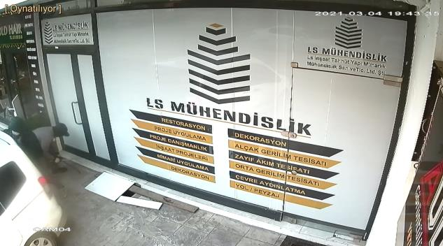
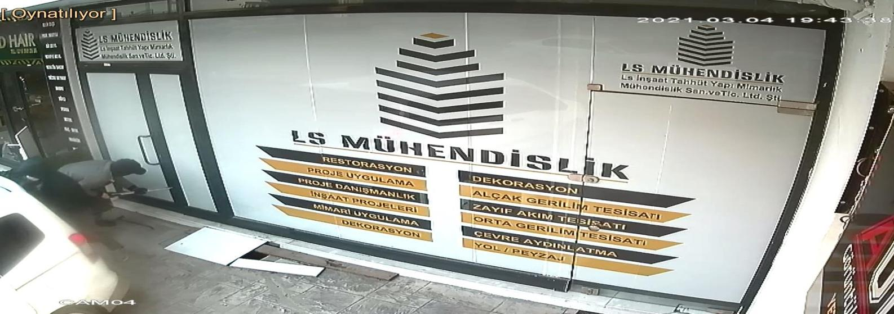
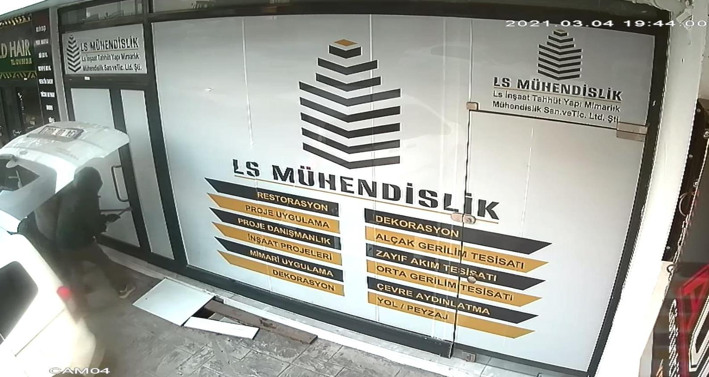
4_04_R_210304194000 isimli video dosyası açılıp bilirkişi olmaksızın Polis Merkezimizde mevcut bilgisayarda uygun oynatıcı GOM Player ile izlendiğinde;
ŞÜPHELİ ŞAHISLAR. ELİNDE DEMİR LEVYE
2 şüpheli şahsın ellerindeki demir levye ile işyerinin kapısını açmaya çalıştıkları, açamayınca bagaj kapağını kapattıkları ve kırmızı montlu başka 3. Bir şahsın aşağıya gelip eline demir levye alıp kapıyı zorladığı görülmüştür.
Sayfa 3 / 16
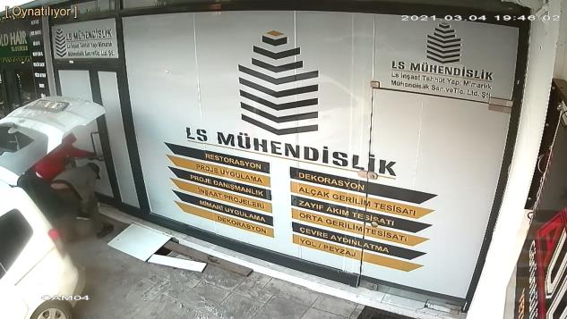
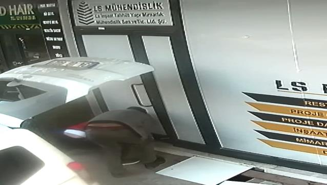
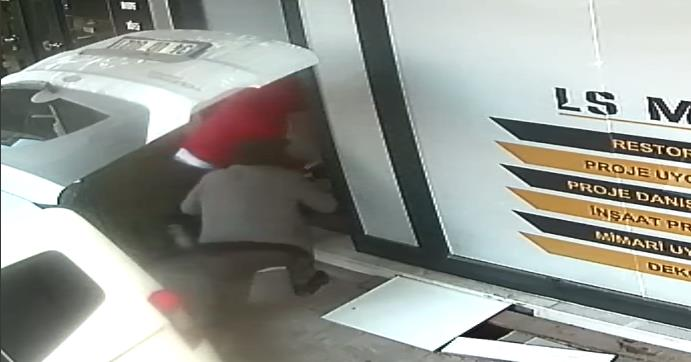
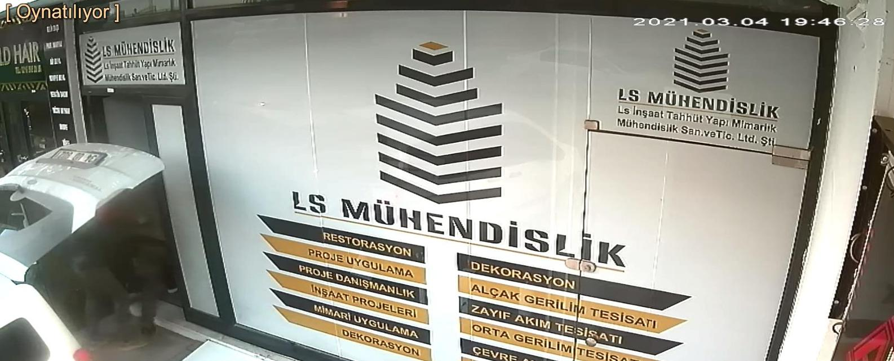
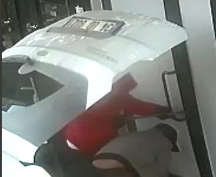
Görüntüde
hırsızlık
yapan
şahısların
geldikleri
ve
işyerine
yanaştıkları aracın; Plakası net olarak
okunmakta olup, yukarıda yazıldığı üzere
Tuzla İlçesinden 03/03/2021 tarihinde
çalınan Dacıa marka araca ait 34 UD
8021 olduğu görülmektedir.
Bir süre sonra şahısların kapıyı zorlamaları üzerine açtıkları ve kapının açıldığı ve içeriye girdikleri görülmüş, kırmızı montlu şahsın aracın içinde beklediği, diğer 2 şahsın içeriden kablolar ile çıktıkları ve araca yükledikleri görülmüştür.
Sayfa 4 / 16
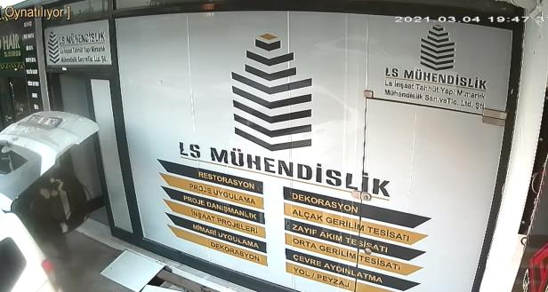

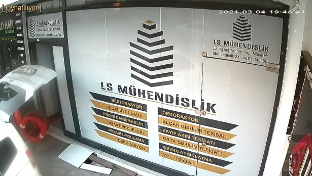
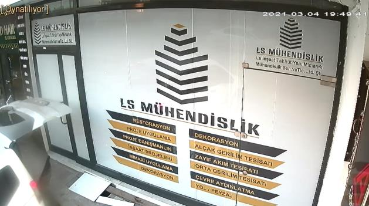
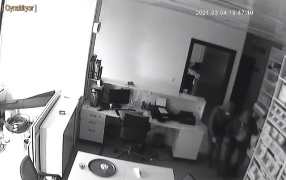
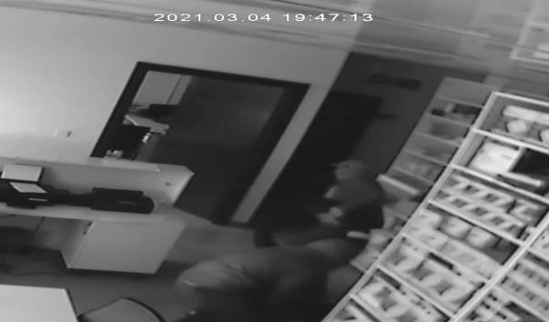
ŞÜPHELİ ŞAHISLAR. ELİNDE ÇALDIKLARI
KABLO
Şüpheli şahısların bu şekilde işyerinden hırsızlık yaptıkları ve bagajdan araca binip işyerinin kapısını da çekip geldikleri araç ile uzaklaştıkları görülmüştür.
ŞAHISLARIN İŞYERİ İÇERİSİNDEKİ GÖRÜNTÜLERİNE AİT 2_02_R_210304194000 isimli video dosyası izlendiğinde;
Sayfa 5 / 16
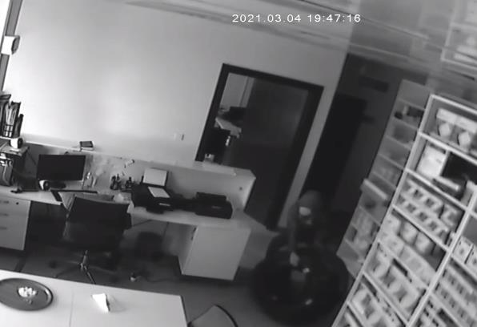
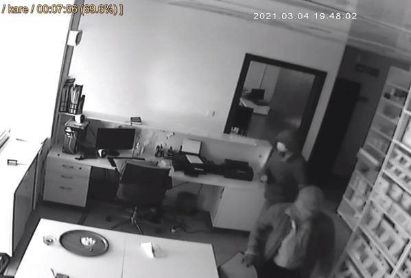
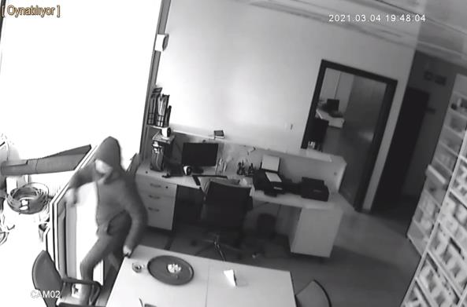
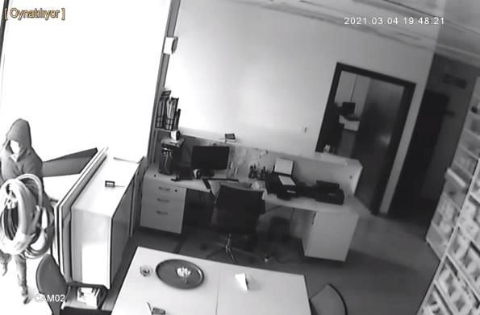
Şüpheli şahısların bu şekilde hırsızlık eylemlerini yaptıkları anlaşılmış olup, görüntüler video olarak izlendiğinde eylemleri daha net olarak anlaşılacaktır.
OLAY İLE İLGİLİ DEĞERLENDİRME
Gerek yukarıda görüntüleri izlenen olayın, gerekse önceki tarihlerde meydana gelen bu tür hırsızlık konuları arşiv kayıtlarımızda, Polnet Ekip Projesinde vb sorgulatılıp olay özetleri, tahkikat evrakları incelendiğinde;
- Şüpheli şahısların hırsızlık eylemini gerçekleştirirken kullandıkları aracın genelde kapalı kasa kamyonet türü araçlar olduğu,
-Şüpheli şahısların genelde kullandıkları araçlara çalıntı veya ikiz plaka ile oynama yapıp değiştirdikleri plaka taktıkları,
-Hırsızlık eylemlerine bu şekilde gelen şüphelilerin en az 3 kişi oldukları,
-Şüphelilerin daha önceden mutlak surette kolluk kuvvetlerince yakalandıkları benzer hatta aynı olaylardan yakalandıkları,
-Şüpheli şahısların mutlaka suç birlikteliklerinin olduğu,
-Şüpheli şahısların eylemlerini yapmak için geldikleri araç içerisinde bile maskelerini şapkalarını tanınmamak, kameralara yakalanmamak için çıkartmadıkları,
-Şüpheli şahısların hırsızlık eylemleri yaparken mutlaka sağlık maskesi veya yüz kapatan diğer maske taktıkları, eldiven kullandıkları,
-Bu tür eylemleri yapan şüphelilerin adi hırsızlık (günübirlik) olarak yapmadıkları, örgütlü bir şekilde bu işi yaptıkları ve bu işi meslek haline getirdikleri, kazançlarını bu şekilde sağladıkları anlaşılmıştır.
Sayfa 6 / 16
POLNET EKİP PROJESİ ARŞİV ARAŞTIRMASI
Polnet Ekip Projesi üzerinde yaptığımız çalışmalarda (olay tarihimize yakın tarihler baz alınmıştır.) çapraz sorgu olarak kablo, kapalı kasa, açıktan hırsızlık, levye, çalıntı plaka, Ford vb. kelimeler kullanılıp çıkan sonuçlarda;
Kocaeli->Çayırova->Asayiş Büro Amirliğinin 24/03/2021 tarih ve 2021/25 suç numaralı İşyerinden ve Kurumdan Hırsızlık olayı
08/04/2021 günü Asayiş Büro Amirliğimize gelen Yaşar BAYRAM alınan beyanında özetle; Tosb Organiye Sanayi Bölgesi 1.Cadde 12. Sokak No:14 sayılı adreste faaliyet gösteren Persifleks Plastik Fabrikası Ltd. Şti. isimli firmanın sahibi olduğunu, firmalarına ait işlerde kullanmakta oldukları, işyerinin içerisinde bulunan depoda kabloların bulunduğunu, işyerlerine ait güvenlik kameraları izledikleri kadarıyla, 24/03/2021 günü saat: 06:15 sıralarında, işyerlerinde çalışanların bulunmadığı esnada, beyaz renkli bir araç ile gelen 3 şahsın, işyerlerine ait sürgülü kapının kilidini kırıp, gelmiş oldukları araç ile depoya yanaştıklarını ve depo içerisinde bulunan 100 metre uzunluğunda, 3 x 0.70 ebadında sanayi tipi bakır kabloyu yükleyip götürdüklerini gördüklerini, Yaklaşık olarak toplam zararlarının 25.000 (yirmibeşbin) TL civarında olduğunu beyanla hırsızlık olayını gerçekleştiren şüpheli şahıslardan davacı ve şikayetçi olmuştur. Çayırova Asayiş Büro Amirliğimizce yürütülmekte olan 2021/25 suç numaralı ‘İşyerinden Ve Kurumdan Hırsızlık’ olayı ile ilgili olarak yapılan çalışmalarda, meydana gelen hırsızlık olayını üzerinde 34 KLL 06 sayılı çalıntı plaka takılı, 34 DPA 286 gerçek plakalı çalıntı araç ile gelen şüpheli şahıslardan tarafından gerçekleştirildiği tespit edilmiştir.
Devam eden çalışmalarda 34 DPA 286 sayılı gerçek plakalı aracın İstanbul ili Ataşehir ilçesinde 05/04/2021 günü Okan BÜYÜKTUNA (TCKN:40390524052) isimli şahısla birlikte ele geçirildiği, yakalanan şüphelinin gerekli işlemlerin akabinde Maltepe 2 Nolu L Tipi Kapalı Ceza İnfaz Kurumuna teslim edildiği anlaşıldığından, şahsın ifadesinin alınması ve diğer şüpheli şahısların tespiti mümkün olmamıştır.
İstanbul->Sancaktepe->Sancaktepe Polis Merkezi Amirliğinin 01/04/2021 tarih ve 2021/1173 suç numaralı İşyerinden ve Kurumdan Hırsızlık olayı
01.04.2021 günü 21:11 sıralarında polis merkezi amirliğimize gelerek müracaatta bulunan Rıza ERİŞ alınan ifadesinde; ' Ben yukarıda belirtmiş olduğum adreste ikamet ederim. ALG CNC MEKANİK SAN. TİC. LTD. ŞTİ isimli firmanın sahibiyim. Eyüpsultan mahallesi Aktar sokak No:1A sayılı adreste bulunan imalathaneye firmamız yaklaşık 10 günden beri taşınma ve tadilat aşamasındaydı. Bugün yani 01.04.2021 günü saat 17:35 sıralarında iş yerimden hırsızlık olduğunu öğrenmem üzerine hemen iş
yerime gittim. Ben iş yerine geldiğimde iş yerimin giriş katında raflarda kolilenmiş bir şekilde yurtdışına satış için imal ettiğimiz pirinç malzemelerden toplam 6 koli içerisinde 9500 adet parçanın çalınmış olduğunu gördüm. Bu parçaların maddi değeri 80.000,00 TL dir. Çevre yaptığım incelemede sanayi sitesine ait kamera görüntülerini izlediğimde plakasını net göremediğim beyaz renkli Ford Coruer marka bir aracın iş yirimin önüne yanaştığı, içerisinden 2 erkek şahsın inerek açık giriş kapısından girip 6 adet koli aracına yükleyerek oradan kaçtığını gördüm. Hemen konuyla ilgili polisi arayıp müracaat için polis merkezine geldim.
Ben işyerime izinsiz girerek 6 koli içerisinde 9500 adet prinç makine parçasını çalarak beni 80.000,00 TL zarara uğratan kimliği meçhul şahıslardan davacı ve şikayetçiyim.' şeklinde beyanda bulunması üzerine Cumhuriyet Savcısı ile görüşülerek tahkikata başlanmıştır. Sancaktepe Asayiş Büro Amirliği görevlilerince yapılan çalışmalar neticesinde olayın gerçekleştiren Okan BÜYÜKTUNA isimli şahsın olayın faillerinden biri olduğu tespit edilmiştir. Şüpheli Okan BÜYÜKTUNA ve olayın diğer kimliği meçhul faillerinin yakalamaya yönelik çalışmalar halen devam etmektedir. Hazırlanan tahkikat evrakı ikmalen gönderilmiştir.
Kocaeli->Gebze->Cumhuriyet Polis Merkezi Amirliğinin 29/03/2021 tarih ve 2021/517
suç numaralı İşyerinden ve Kurumdan Hırsızlık olayı
29.03.2021 günü saat:06:48 sıralarında İstasyon Mahallesi 1426. Sokak No:1 (Özvefa Yapı Malzemeleri) sayılı adreste meydana gelen olay ile ilgili olarak Tolgahan AKKURT'un alınan ifadesinde özetle; Özvefa isimli yapı malzemelerinin satılmış olduğu işyerinin sahibi olduğunu, iş yerinin anahtarını kardeşi olan Aliye verdiğini, ertesi sabah Ali'nin kendisini arayarak dükkan kilidinin kırılmış olduğunu ve hırsız girmiş olabileceiğini söylediğini, akabinde polisi aradıklarını,dükkanın kamerasını kontrol ettiğini, araçla gelen üç kişinin araçtan inerek dükkanın asma kilidini makasla kırdıklarını, vitrini ise sert bir cisimle zorlayarak açtıklarını, dükkanından inşa işlerinde kullanılan matkap, akülü vidalama aletler gibi elektrikli el aletlerini çalmış olduklarını gördüğünü, şahıslar malzemeleri çalıp olay yerinden ayrıldığını, toplam değerinin 60-70.000 TL olan iş malzemelerinin çalındığını, dükkanından malzemeleri çalan şahısların tespiti halinde davacı ve şikayetçi olduğunu beyan etmiştir. Bahse konu olay ile ilgili olarak temin edilen kamera görüntüleri incelendiğinde hırsızlık olayına karışan şahsın İskender DALKOPARAN isimli şahıs olduğu tespit edilmiştir. Şüpheli İskender DALKOPARAN isimli şahıs temin edilemediğinden ifadesi alınamamıştır. Ali UĞURLU isimli şahıs temin edilemediğinden bilgi sahibi olarak ifadesi alınmamıştır. OYİ Ekiplerince Apfis sisteminde yapılan sorgulamada Sayfa 7 / 16
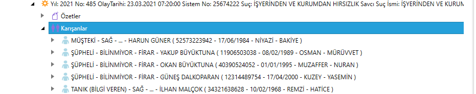
herhangi bir eşleşme tespit edilememiştir. 1,2,3, numaralı izlerin sistemde sorgulamaları devam etmektedir. Konu ile ilgili hazırlanan tahkikat evrakları, mühürlü zarf içerisinde bulunan OYİ Fotoğraf CD'si, 2021/280 numaralı OYİ Raporunda belirtilen 1
numaralı bulgunun bulunduğu mühürlü delil zarfı içerisende ikmalen gönderilmiştir.
İstanbul->Sultanbeyli->Sultanbeyli Fatih Polis Merkezi Amirliğinin 26/03/2021 tarih ve 2021/489 suç numaralı AÇIKTAN HIRSIZLIK olayı (İSTANBUL ANADOLU C.B.S.
2021/67087)
26.03.2021 günü Polis Merkezimize gelen Ersin KARABACAK isimli kişi; kardeşi adına tescilli aracın ön ve arka plakalarının yerinde olmadığını ve şikayetçi olduğunu beyan etmiş ve nöbetçi c. savcısının talimatları doğrultusunda tahkikata başlanmıştır.
Müşteki beyanında;Ben trafikte öz kardeşim Sinan KARABACAK adına tescilli ancak bana ait olan 34 ED 6306 plaka sayılı vwolksvagen transporter marka 2006 model beyaz renkli aracımı 25/03/2021 günü saat 16/00 sıralarında Akşemsettin mahallesi Makber sokak no:10 sayılı adresteki ikametimin önüne tüm güvenlik önlemlerini alarak park ettim. Bugün saat 09/00 sıralarında aracımın yanına gittiğimde aracın ön ve arka plakalarının yerinde olmadığını çalınmış olduğunu gördüm. Aracımın plakalarını çalan faili meçhul şüpheli şahıs yada şahıslardan ŞİKAYETÇİYİM. DEDİ. Tahkikata başlanmıştır.
Kocaeli->Gebze->Cumhuriyet Polis Merkezi Amirliğinin 23/03/2021 tarih ve 2021/485
suç numaralı İşyerinden ve Kurumdan Hırsızlık olayı
Belirtilen yer ve zamanda meydana gelen olay ile ilgili olarak müşteki Harun GÜNER'in alınan ifadesinde özetle; Günersoy Makine isimli işyerinin işletme müdürü olduğunu, çalışanının iş yerinde hırsızlık olduğunu söylemesi üzerine iş yerine gittiğini, olay yerine polislerin geldiğini, karşı iş yerinin kamera kayıtlarına baktığını, beyaz bir aracın iş yerinin önüne geldiğini, aracın yolcu koltuğundan inen şahsın kapının kilidini keserek açtığını akabinde arabayı içeri doğru park ettiklerini gördüğünü, içeriye giren şahısların iş yeri çalışanı geldiğinde hızla araçla uzaklaştıklarını, 1 adet dekopaj, 1 adet ufak çanta kaynağı olmak üzere toplam değeri 55.000 TL’yi bulan malzeme ürünleri çalmış olduklarını tespit ettiklerini, kimin yapmış olabileceği hakkında fikrinin olmadığını, eylemi gerçekleştiren şahısların tespiti halinde davacı ve şikayetçi olduğunu beyan etmiştir. Bilgi Sahibi İlhan MALÇOKun alınan ifadesinde özetle; Günersoy Makine isimli iş yerinde kaynakçı olduğunu, sabah 07.00 sıralrında iş yerine geldiğinde Ford Courneo marka bir aracın iş yerinin kapısına doğru yanaştığını gördüğünü, ancak şüphelenmediğini, şahısların akabinde gittiğini, şahısların hırsız olduğunu sonradan öğrendiğini beyan etmiştir. Olay Yeri inceleme Raporu dosyaya eklenmiştir.
Yapılan kamera araştırmaları neticesinde Bosch ortaklar oto servis isimli iş yerine ait olay yerini gösterir kamera temin edilmiş, şahıslara ait aracın iş yerine geliş anı, iş yerinin dış kısmını kapatan demir kapıyı açtıkları an, son olarak şahıslara ait aracın iş
yerinden çıktığı an kameralarda görüntülenmiştir. Asayiş Büro Amirliğinin şüpheli tespitine yönelik yapmış olduğu araştırmalar neticesinde Şüphelilerin Güneş DALKOPARAN, Yakup BÜYÜKTUNA, Okan BÜYÜKTUNA olduğu değerlendirilmiştir. Yakalanan Şüpheli Okan BÜYÜKTUNAnın ifadesi alınmış dosyaya eklenmiştir. Şüphelilerin temini mümkün olmadığından ifadeleri alınamamış olup evrak ikmalen gönderilmiştir.
Kocaeli->Darıca->Darıca Polis Merkezi Amirliğinin 23/03/2021 tarih ve 2021/162 suç numaralı İşyerinden ve Kurumdan Hırsızlık olayı
24.03.2021 günü Polis Merkezi Amirliğimize gelen Ali ARSLAN isimli şahsın müşteki olarak alınan ifadesinde; kendisinin Darıca Küçük sanayisi içerisinde bulunan Doğuş makina isimli iş yerinin sahibi olduğunu 23.03.2021 günü saat:09.00 sıralarında iş
yerinde çalışan personellerin iş yerinde hırsızlık olduğunu bildirmesi üzerine iş yerine giderek kamera görüntülerini izlediğinde aynı gün saat:06.50 sıralarında üç şahsın dükkanın kapı kilidini levye ile açtığını bir şahsın ise geldikleri araçta beklediğini gördüğünü. Araç plakasını havanın karanlık ve kamera kalitesinden dolayı tam olarak okuyamadığını. Dükkanı kontrol ettiğinde dükkanın giriş katında bulunan 11.000 TL değerinde Lenova marka diz üstü bilgisayarın, 8.000 TL değerinde magmaweld marka kaynak makinasının, 3 adet toplam değeri 4.500 TL olan el matkabının, bir adet 2.000 TL değerinde şarjlı matkap ve 3 adet toplam Sayfa 8 / 16
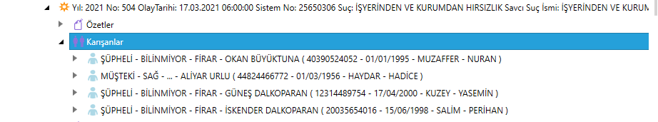
değeri 3.000 TL olan taş motorunun yerinde olmadığını görerek durumu polis ekiplerine haber verdiğini. Konu hakkında iş yerinden hırsızlık yapan şahıslardan davacı ve şikayetçi olduğunu beyan etmiştir. Konu ile alakalı olarak yapılan çalışmalarda şüpheli şahısların İskender DALKOPARAN,Okan BÜYÜKTUNA ve Güneş DALKOPARAN isimli şahıslar ile birlikte kimliği tespit edilemeyen bir şahıs olmak üzere toplamda dört şahıs oldukları tespit edilmiş, ancak şuana kadar yapılan çalışmalar sonucunda şüpheli şahısların temini mümkün olmamıştır. Hazırlanan evraklar ikmalen gönderilmiştir.
İstanbul->Sancaktepe->Sancaktepe Polis Merkezi Amirliğinin 23/03/2021 tarih ve 2021/1042 suç numaralı İşyerinden ve Kurumdan Hırsızlık olayı
24.03.2021 günü idaremiz dahilinde meydana gelen Otodan Hırsızlık (Çift Plaka) olayı ile ilgili olarak Cumhuriyet savcısı ile görüşülmüş alınan talimatlar gereği tahkikata başlanmıştır. Konu ile ilgili olarak Müşteki Mevlüt DELİKTAŞ isimli şahsın alınan ifadesinde 23.03.2021 günü saat 20:45 sıralarında kendi kullanımında olan 34 KLL 06 plaka sayılı aracını evinin önüne park ettiğini 24.03.2021 günü saat 08:30 sıralarında aracının yanına gittiğinde ön ve arka plakalarının olmadığını gördüğünü belirtmiş, plakalarını çalan kişiden şikayetçi olmuştur. Hazırlanan araştırma tutanağı, görgü tespit tutanağı, oto hırsızlık müracaat formu evrak ekine sunulmuş, ilgili kısımlara gerekli bilgilendirmeler yapılmıştır. Hazırlanan tahkikat evrakı İKMALEN gönderilmiştir.
Konu ile ilgili olarak Şüpheli Okan BÜYÜKTUNA isimli şahıs Ataşehir Mevlana Mahallesi Oruçlu sokakta Asayiş Şube Müdürlüğü Oto Hırsızlığı Büro Amirliği tarafından 05.04.2021 günü yakalaması yapılmış ve günün Cumhuriyet Savcısı Ali Fuat AKIN dan alınan talimat doğrultusunda şüpheli şahıs Asayiş Şube Müdürlüğü Oto Hırsızlığı Büro Amirliği tarafından İstanbul Anadolu Cumhuriyet Başsavcılığına Mevcutlu olarak gönderilmiştir.
Kocaeli->Darıca->İstasyon Polis Merkezi Amirliğinin 17/03/2021 tarih ve 2021/504 suç numaralı İşyerinden ve Kurumdan Hırsızlık olayı
20.03.2021 günü İşyerinden ve Kurumdan Hırsızlık konusuyla ilgili olarak polis merkezimize gelerek müracaatta bulunan müşteki Aliyar URLU alınan ifadesinde; Osmangazi Mahallesi Aşıroğlu Caddesi Adalı Sokak No: 18/A sayılı adreste Ufuk Elektrik isimli iş
yerinin bulunduğunu 16.03.2021 günü saat 19:10 sıralarında iş yerinin kapısını kilitlediğini ve kepenk olarak tabir edilen kapı korumasınıda kilitlediğini sonrasında ikametine gittiğini 17.03.2021 günü saat 08:00 sıralarında iş yerine gittiğini kapıyı açmak istediği sırada iş yerinin kapısında bulunan ve kepenkte bulunan asma kilit olarak tabir edilen kilidin kırılmış kilitlerin takılı olduğu zincirinde kırılmış kepengin yarıya kadar açılmış olduğunu gördüğünü ardından kepengin altından baktığında kapınında bir cisim ile zorlanarak açıldığını gördüğünü ve iş yerinin içerisine girdiğini iş yerine hırsız girdiğini anladığını Sonrasında hemen polis ekiplerini aradığını polis ekipleri ve olay yeri inceleme ekiplerinin geldiğini gerekli incelemeleri yaptıklarını gerekli incelemeler yapıldıktan sonra iş yerinden çalınan malzemelerimi kontrol ettiğinde piyasa değeri yamlaşık 20.000 TL olan elektrik işlerinde kullanılan matkapların matkap uçlarının ve elektirk kablolarının çalındığını tespit ettiğini. Konuyla ilgili olarak eş yerinin kapısında bulunan kilitleri kırarak iş yerine giren ve yaklaşık 20.000 TL değerinde malzemelerini çalan şahıs/şahısların tespiti ve temini halinde davacı ve şikayetçi olduğunu ayrıca çalınan malzemelerinin bulunması durumunda tarafına teslim edilmesini estediğini beyan etmiştir. Konuyla ilgili Şüpheli olarak İskender DALKOPARAN, Güneş DALKOPARAN, Okan BÜYÜKTUNA isimli şahıslar tespit edilmiş olup, Okan isimli şahıs İstanbul İl Emniyet Müdürlüğü Asayiş Şubi Müdürlüğü Oto Hırsızlığı Büro Amirliği tarafından yakalanmış, İskender ve Güneş isimli şahıslar ise temin edilememiştir. Hazırlanan tahkikat evrakı ikmalen gönderilmiştir.
İstanbul->Ataşehir-> İçerenköy Şehit Halil Çayır Polis Merkezi Amirliğinin 05/03/2021
tarih ve 2021/803 suç numaralı İşyerinden ve Kurumdan Hırsızlık olayı
Konu ile ilgili olarak müşteki Mustafa TOPCU isimli şahısın alınan ifadesinde;Küçükbakkalköy mahallesi Koca Sinan Caddesi no:25B sayılı adreste bulunan A Plus Bilgi teknolojileri şirketi bana aittir. Mağazamı 05/03/2021 günü saat 21:00 sıralarında kilitledim ve evime giitim. 06/03/2021 günü saat 00:24 de komşum beni aradı ve iş yerimden hırsızlık yapıldığını söyledi. Hemen iş yrime gittim. İş yerime gittiğimde iş yerinin arkasaında hava landırma camı olan demir parmaklıklı camın demirinin kesik olduğunu gördüm. İş yerime girdiğimde çeşitli markalarda notebookların olmadığını gördüm. Şuan çalınan malzemelerimi tam tespit edemedim. Tespit ettikten sonra tekrar polis merkezinize gelip bilgi vereceğim. İş yerimde gerekli olay yeri inceleme yapılmıştır. İş yerimden hırsızlık yapan şüpheli şahıs yada şahısların yakalanması halinde davacı ve şikayetçiyim. Dedi.
Sayfa 9 / 16
Konu ile ilgili olarak müştekinin alınan ek ifadesinde;06/03/2021 günü işyerinden hırsızlık konusu ile alakalı ifademi vermiştim.Ogün iş yerinden çalınan malzemelerimi tespit edemediğimden çalınan malzemelerimi bildirememiştim.Polis merkezinize çalınan malzemelerimi altı imzalı şekilde sunuyorum.İş yerimde yapılan olay yeri inceleme raporunda parmak izi çıkan Zafer DEMİR isimli şahıs benim çalışanımdır. Kendisinden davacı ve şikayetçi değilim. İş yerimden hırsızlık yapan şüpheli şahıs yada şahısların yakalanması halinde davacı ve şikayetçiyim. Dedi. Konu ile ilgili olarak günün nöbetçi savcısı ile görüşüldüğünde müşteki ifadesinin alınması, olay anını görüntüleyen kamera kayıtlarının araştırılması, şüpheli şahıs yada şahısların yakalanması halinde ifadesinin alınarak tekrar talimat alınması, olay yeri incelemem yapılması, hazırlanan tahkikat evrakının İKMALEN gönderilmesi talimatları alınmıştır. Bahse konu olayla alakalı olarak tarafımıza gönderilen 05/04/2021 tarih ve 2021040213580302308 sayılı Parmak İzi Tespit raporunda Bulgu Numarası 1 olan PCY ibareli etiketler yapışık şeffaf ambalaj üzerinde elde edilen iz ile Burhan KAPTAN isimli şahsın Sol Yüzük parmak izinin, Bulgu numarası 3 olan P/N ibareli üzerinde etiketler yapışık karton kutu üzerinden elde edilen iz ile de Okan ABLAK isimli şahsın Sol Baş parmak izinin aynı olduğunun tespit edildiği bildirilmiştir. Tespit sonrasında yakalamaları Ataşehir Asayiş Büro Amirliğince yapılan Burhan KAPTAN ve Okan ABLAK
isimli şahıslar Polis Merkezimize teslim edilmiş, şahıslar verdikleri ifadelerinde konunun gerçekleştiği işletmede çalıştıklarını, parmak izlerinin çıkmasının olağan olduğunu beyan etmişlerdir.
İstanbul->Ataşehir-> İçerenköy Şehit Halil Çayır Polis Merkezi Amirliğinin 02/03/2021
tarih ve 2021/745 suç numaralı İşyerinden ve Kurumdan Hırsızlık olayı
Yılmaz AHÇIOĞLU isimli şahsın alınan Müşteki ifadesinde :"İçerenköy Mahallesi Karslı Ahmet Caddesi No:29/4 Ataşehir/İstanbul sayılı adreste bulunan Akım Aydınlatma isimli iş yerinin sahibi ve işletmecesi olurum. 02.03.2021 günü iş yeri alarmı devriye girdi. Saat: 22.00 iş yerine geldiğimde polis olay yerine çoktan gelmişti. İş yerime naktığımda kapı kilidinin kanıttırılmak sureti ile kırıldığını, demir kapının kasıldığını kepenk kilidinin ise kesildiğini gördüm. Olay yeri ekipleri inceleme yaptı. Kamera kayıtlarına baktığımda yüzü gözü kapalı eşgali belli olmayan eldivenli 3 erkek şahsın, levye yardımı ile kapıyı açtığını, iki şahsında araçtan inmediğini diğerlerini beklediğini toplamda 5 şahsın hırsızlık yaptığını izledim. İçeride rafta ve vitrinde bulunan ; 1000 metre RG6-U6 Anten Kaplosu ( 500 metre şeklinde siyah renkli 2 makara koblo) 100 metre Kırmızı renkli Yangın Kablosu, 300 metre 3X1,5
TTR Beyaz renkli kablo, 320 metre 5X6NYY Siyah renkli koblo, 80 metre 5X2,5 NYM Gri renkli koblo, 60 metre 4X2,5 NYM Gri renkli elektrik kablolarının yerinde olmadığını çalındığını fark ettim. Şüphelendiğim kimse yoktur.Olayı gören yoktur. Olay yerinde bulunan görüntüleri evraka eklenmesi için size sunuyorum. Olayla ilgili hırsızlık suçunu işleyen F.M. şahısların yakalanması durumunda davacı ve şikayetçiyim. İfademe eklemek istediğim başkada bir husus yoktur. Söyleyeceklerim bunlardan ibarettir."Demiştir.Konuyla alakalı olarak günün Nöbetçi C.Savcısı Mehmet Nedim SARI telefonla aranarak konu aktarıldığında;İş
Yerinden Hırsızlık suçundan Müşteki şahsın ifadesinin alınması, Olay Yeri İnceleme ekiplerinin gerekli çalışmayı yapması,Kamera araştırma çalışması yapılması,Faili Meçhul şahısların tespiti halinde Tekrar Talimat alınması,Hazırlanan tahkikat evrakının ise İKMALEN gönderilmesi talimatı alınmıştır.Konu ile ilgili olarak 05.03.2021 günü olayla ilgili olarak incelenen kamera görüntüleri ekiplerimiz tarafından incelenmiş, olay esnasında işyerinden hırsızlık yapan şahıslardan birinin Hüseyin DOĞRU isimli şahıs olduğu tespit edilmesi üzerine 05.03.2021 günü saat:20:00 sıralarında 92-594 kod nolu ekip olarak şahıs ikametinden temin edilerek gerekli işlemlerinin yapılması için büro amirliğimize teslim edilmiştir. Olayla ilgili olarak günün nöbetçi savcısı Erhan TİMUR aranarak talimatları istenmiş, savcımız tespit edilen şahısın kimlik tespitinin yapılarak gözaltına alınması, şahısın 06.03.2021 günü mevcutlu olarak nöbetçi savcılığa sevk edilmesi, S.S.Ç şahısın çeşitli profilde fotolarının çekilerek CD içerisinde evraka eklenmesi talimatlarını vermiştir. S.S.Ç Hüseyin DOĞRU isimli şahıs hakkında hazırlanan tahikkat evrakları ile birlikte memura teslimen gönderilmiştir. Olayda ele geçen Bulgu Numarası 1 olan Ford ibareli dikiz ayna kapağı üzerinde gerekli Vücut İzi İncelemesi yapılarak hazırlanan Uzmanlık Raporunun Aslı yazımız ekinde gönderilmiştir. Arz ederim.
Sayfa 10 / 16

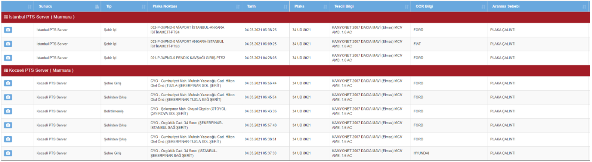
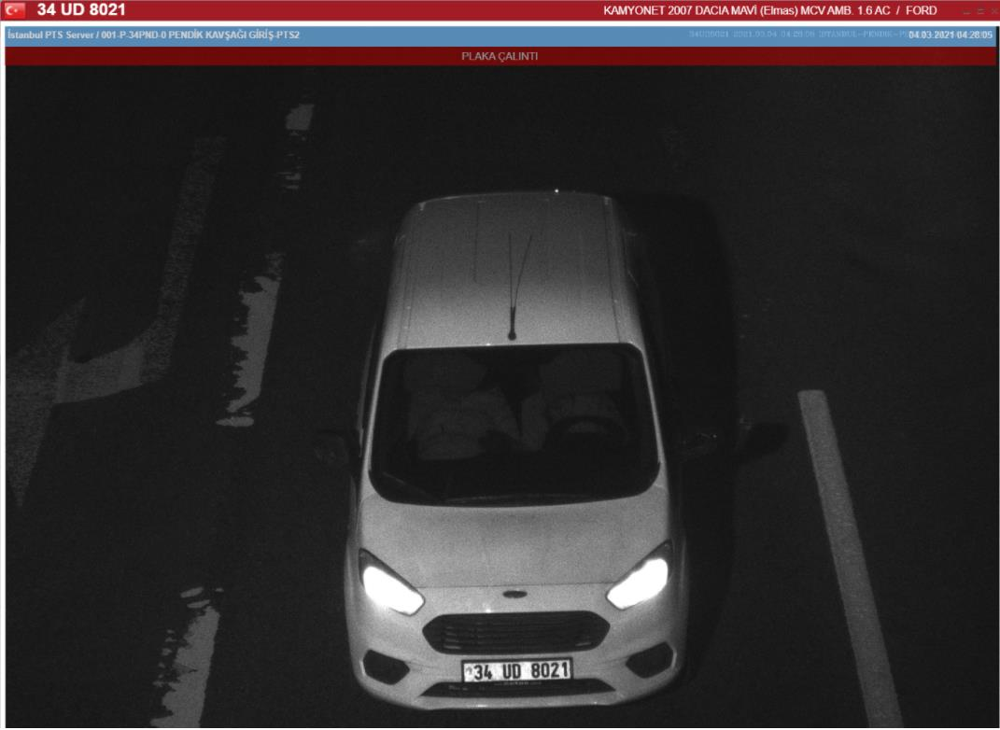
İstanbul->Ümraniye->Dudullu Şehit İsmail Akkoyun Polis Merkezi Amirliğinin 01/03/2021 tarih ve 2021/453 suç numaralı OTO HIRSIZLIĞI olayı, (İstanbul Anadolu C.B.S. 2021/65308)
İdaremiz dahilinde meydana gelen oto hırsızlığı konusuyla alakalı Vedat ŞAHİN'in alınan beyanında; Bugün yani 01.03.2021 Günü saat:08.30 sıralarında çalışmış olduğum Sönmezoğlu Makina isimli iş yerinin bulunduğu Yukarı Dudullu Mahallesi Nato yolu Caddesi No121A önünde bulunan 34 DPA 286 Plakalı Ford Transit courier marka aracın anahtar ve ruhsatını iş yerinden alarak aracı çalıştırdım ve iş yerine geçtim, yaklaşık bir dakika sonra aracın hareket haline geçtiğini duydum, hemen iş yerinden çıkarak araca doğru koştuğumda yetişemedim, kafasında siyah bere takılı, mavi şişme montlu, üzerinde beyaz tek kalın çizgi bulunan tam göremediğim bir şahıs aracı alarak uzaklaşıyordu. Aracı tamda sürmeyi bilmediği acemi olduğu görülüyordu. Araçla hızla uzaklaşarak Dudullu istikametine doğru kaçtığını gördüm. Ben ne yaptıysam aracı durduramadım. İş yerimizde kamera görüntüleri var. Aracın maddi değeri yaklaşık 150.000TL 'dir. İş yerinde ait aracı çalan yukarıda tarif ettiğim şahıstan davacı ve şikayetçiyim.
Aracımın bulunarak bana teslim edilmesini istiyorum.Dedi. Tahkikata başlanmıştır.
34 UD 8021 PLAKALAR TAKILI ARACA AİT PTS
GÖRÜNTÜLERİ
SİPERLİKLER İNİK
Sayfa 11 / 16
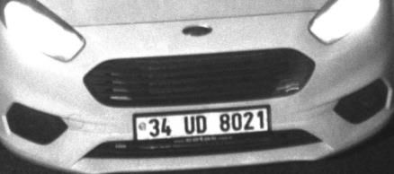
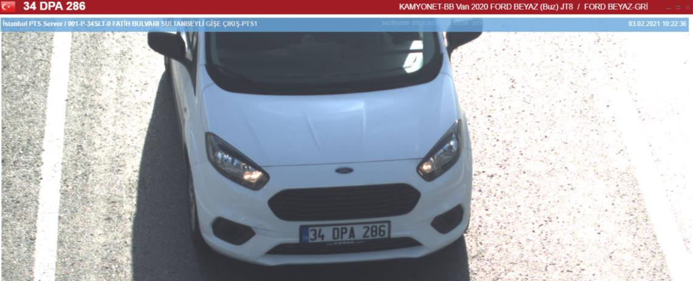
Plakalıkta çetaş yazısı
Okan BÜYÜKTUNA nın çaldığı ve sonrasında
yakalandığı aracın çalınmadan önceki orijinal
plaka ile geçişi
Sayfa 12 / 16
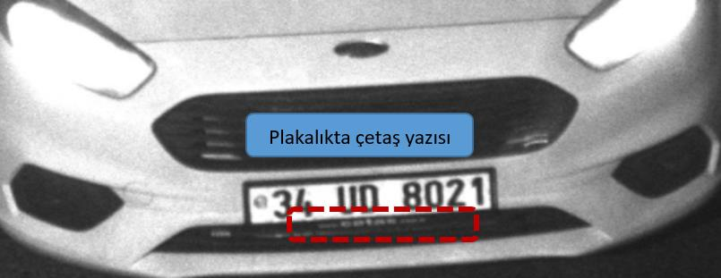
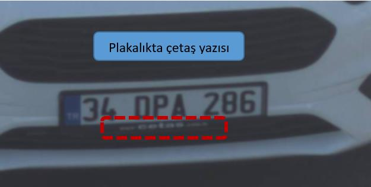
Plakalıkta çetaş yazısı
Ayrıntılı bir şekilde görüleceği üzere;
1- Pendik Yenişehir Bölgesinde 05/03/2021 günü meydana gelen İşyerinden Hırsızlık olayında kullanılan Ford Courrier marka otoya takılı 34UD8021
plakaların,
2- 03/03/2021 tarihinde Tuzla İlçesinden ÇALINTI olduğu,
3- Orijinal plakaları 34 DPA 286 olan beyaz renkli Ford Courrier marka aracın ise 01/03/2021 günü Ümraniye ilçesinden ÇALINTI olduğu,
4- PTS görüntülerinde Pendik ilçemizden hırsızlığa karışan 34UD8021 çalıntı plakalar takılı Ford Courrier aracın plakalık kısmında “çetaş” yazdığı,
5- Ümraniye ilçesinden çalınan 34 DPA 286 olan beyaz renkli Ford Courrier aracın plakalık kısmında aynı şekilde “çetaş” yazdığı,
6- 05/04/2021 günü İstanbul Asayiş Şube Müdürlüğü Oto Hırsızlığı Büro Amirliği görevlilerince yapılan çalışmalarda Ümraniye İlçesinden çalınan 34 DPA 286 olan beyaz renkli Ford Courrier plakalı aracın üzerinde, yine Sultanbeyli ilçesinden çalıntı olan 34 ED 6306 plakaların takılı olduğu halde şüpheli Okan BÜYÜKTUNA isimli şahsın suçüstü şoför mahallinde YAKALANDIĞI anlaşılmıştır.
Sayfa 13 / 16


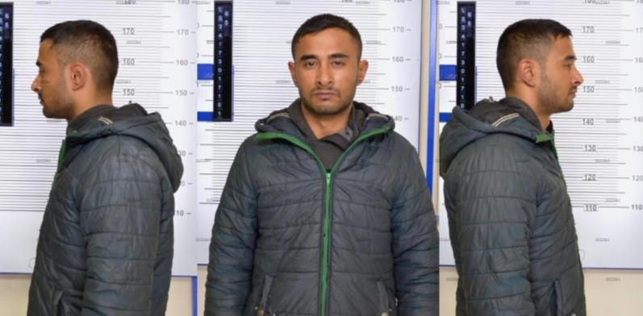
SONUÇ VE TESPİT
Tutanağımızda işlenen ve yukarıda olay özetimiz yazılı Pendik İlçemizde Kurtköy Mahallesinde 05/03/2021 günü meydana gelen İşyerinden Hırsızlık olayı ile ilgili olarak, Şüpheli Okan BÜYÜKTUNA (sonraki sayfalarda açık kimlik bilgileri ve iletişim bilgileri ile resimleri işlenecektir) isimli şahsın
1 Mart 2021 tarihinde 34 DPA 286 plaka sayılı beyaz renkli Ford Courrier marka model aracı çaldığı,
3 Mart 2021 tarihinde Tuzla ilçesinden mavi renkli Dacıa marka araca ait 34 UD 8021
sayılı çift plakaları çaldığı,
Çalmış olduğu 34 UD 8021 sayılı plakaları, yine öncesinde Ümraniyeden çalmış olduğu Ford Courrier araca taktığı,
34 UD 8021 sayılı çalıntı plakaların takıldığı, çalıntı beyaz Courrier marka araç ile şüphelinin İlçemiz Pendik e yanında şu an kimlikleri tespit edilemeyen 2 şahıs ile birlikte gelerek işyerinden hırsızlık olayını gerçekleştirdiği ve faili meçhul olarak sisteme girdiği,
İstanbul Emniyet Müdürlüğü Asayiş Şube Müdürlüğü görevlilerince yapılan operasyon sonucu çalıntı araç ve plakalar ile 5 Nisan 2021 tarihinde yakalandığı tüm evrak ve Polnet kayıtlarından anlaşılmış ve tespit edilmiş olup;
Bu sebeple Pendik Yenişehir Polis Merkezi Amirliğimiz idaresi Kurtköy Mahallesi Soydaş
Sokak No:2BD sayılı adreste bulunan LS İnşaat isimli işyerinde 05.03.2021 günü saat:07:43 de meydana gelen 2021-776 suç numaralı Faili Meçhul İŞYERİNDEN VE KURUMDAN
HIRSIZLIK-MALA ZARAR VERME olayının 1. Şüphelisinin 40390524052 T.C. kimlik numaralı Muzaffer ve Nuran oğlu Kadıköy 01/01/1995 doğumlu OKAN BÜYÜKTUNA olduğu tarafımızdan KESİN VE NET OLARAK TESPİT EDİLMİŞTİR.
ŞÜPHELİYE AİT BİLGİLER (RESİM-SUÇ-UYAP-ADRES VB
KAYITLARI)
YENİ ÇAMLICA MAH. ÇEŞMEBAŞI SK. NO: 2 İÇ KAPI NO: 1 ATAŞEHİR /
İSTANBUL ikamet adresi gözükür.
Sayfa 14 / 16
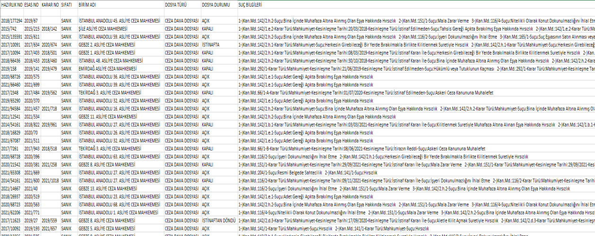
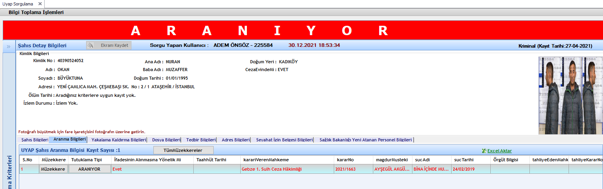
POLNET KARIŞTIĞI OLAYLAR
UYAP DOSYA BİLGİLERİ
UYAP ARANMA BİLGİLERİ
181549
Sayfa 15 / 16


40390524052 T.C. kimlik numaralı Muzaffer ve Nuran oğlu Kadıköy 01/01/1995
doğumlu OKAN BÜYÜKTUNA isimli şahsın halen CEZAEVİNDE olduğu, ve Bina İçinde Muhafaza Altında olan Eşya Hakkında Hırsızlık Suçundan ARANDIĞI anlaşılmış, bu sebeple şahsın temini mümkün olmamıştır.
İş bu Olay, Görüntü İzleme, Araştırma, Değerlendirme Ve Tespit Tutanağı tarafımızdan tanzimle altı birlikte imza altına alınmıştır. 30/12/2021 19:00
181549
257680
381276
Polis Memuru
Polis Memuru
Polis Memuru
Sayfa 16 / 16